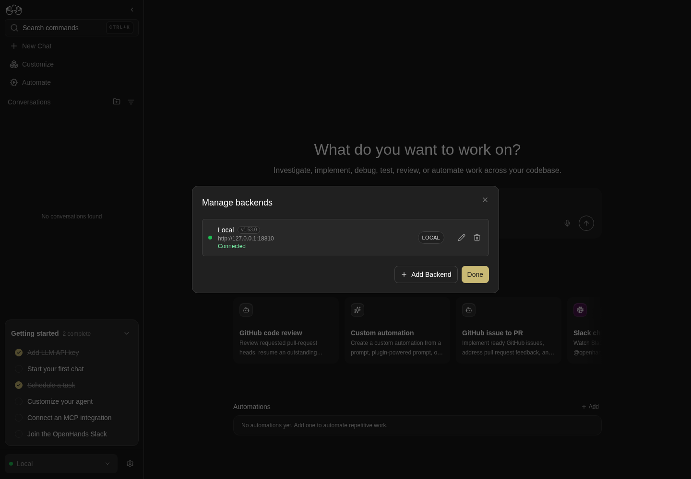

How to get to it
- Sidebar, bottom: the backend selector (
backend-selector; click or hover) → options, Add Backend (add-backend-menu-item), Manage Backends (manage-backends-menu-item). - Collapsed rail: hover the backend icon (
collapsed-backend-selector-link) → the same footer items. - Phone: hamburger (
sidebar-mobile-menu-toggle) → drawer → backend selector. - Manage backends → Add Backend (
manage-backends-add) opens the same Add form. - Direct URLs: any in-app URL with
?backend=<id>;/oauth/device/verify[?user_code=CODE];/shared/conversations/<id>. - Conversation header name → "..." (
conversation-name >> ellipsis-button) for Public Share (Cloud only). - Reloading with an unreachable active backend opens the recovery gate.
- Onboarding's backend step and the public-mode API-key screen also add backends; they belong to F01. The ChatGPT subscription card is F10 (
F10.subscription) and the provider balance card is F27 (F27.usage-provider-balance).
Before you start
Start with the common launch and health checks, then follow this family’s preconditions in order. Recipes share the fixtures and state named below.
Preconditions:
- Baseline state (launched, doctored,
onboard --skipdone) andcontrol-openhands llm preset deepseekon this run. - One conversation on this run:
control-openhands conversation start --prompt "Reply with exactly: QA_F25_PONG" --wait --timeout 180; note its<id>. The conversation only has to exist: F25 never reads the reply, so a run that ends inerror(for example a key without balance, saved withllm preset deepseek --no-validate) is enough. - A second stack to add as a backend, started without a browser and never driven directly:
export OH_VERIFY_RUN_2=$(OH_VERIFY_RUN= control-openhands launch --new --build never --no-browser --print-run), thencontrol-openhands status --run "$OH_VERIFY_RUN_2"; itsbaseUrlis<second-url>below and its key is$OH_VERIFY_RUN_2/private/session-key. It has no conversations. - No backend named
QA_SecondorQA_Renamedexists (the selector lists onlyLocal). - Bullets run in order: Add creates
QA_Second, Edit renames it toQA_Renamed, Remove deletes it. - Blocked here (no OpenHands Cloud account): approving the device flow,
F25.cloud-org-rows,F25.cloud-log-back-in,F25.cloud-settings-link,F25.cloud-sandbox-states,F25.cloud-org-suspended(also needs a suspended OpenHands Enterprise organization or membership),F25.share-publicly(toggle), andF25.locked-cloud, which also needs a launcher flag (see Gotchas).
Behavior inventory
29 stable behavior IDs and their expected behavior
F25.selector-dropdownclicking (or hovering) the selector opens a listbox of backends, each option named<status> <name>with a status dot, and a footer with Add Backend and Manage Backends. Read recipe ↓F25.add-backend-modalAdd Backend opens "Choose how you want to connect" with a description, a Learn more link to the deployment docs and two tabs, OpenHands Cloud (selected) and Agent-server. Escape does not close it; the X does. Read recipe ↓F25.cloud-advanced-hoston the Cloud tab, Advanced reveals a Host field (placeholderhttps://app.all-hands.dev) for a self-hosted Cloud. Read recipe ↓F25.cloud-device-flowConnect to OpenHands opens a popup and showsStarting authentication..., thenWaiting for authorization...with the verification link and Cancel; Cancel returns to the idle button and closes the popup. An unreachable host showsFailed to start device flow: ...with Try again. Approving the code (adds a backend named OpenHands Cloud) needs a Cloud account. Read recipe ↓F25.agent-server-guidancethe Agent-server tab has a Local / Remote toggle. Local shows a collapsible Before you connect withagent-canvas --backend-only --port 8001and a local-setup docs link; Remote shows Recommended setup, Connection details and a remote-setup docs link. Read recipe ↓F25.add-agent-serverConnect stays disabled until Host Name and a valid Host are filled; the API Key field is optional for Connect on Local and required on Remote, but a key-protected host still rejects an empty key. A dead host, an empty key or a wrong key showsCould not connect to <host>with the reason inline (Disconnected (check URL or network)for a dead host,Invalid API keyfor an empty or wrong key); a reachable host with the right key, entered on the default Local location, adds the backend, makes it active (BM-001) and redirects a/conversations/<id>page to/conversationswithout an error toast, also on the backend's first activation, without asking the new backend for the old conversation id. Read recipe ↓F25.switch-backendchoosing another option shows a full-screenSwitching to <name>overlay for about a second, then the sidebar and pages show that backend's data; on/conversations/<id>the app moves to/conversations(BM-002). Read recipe ↓F25.backend-pinned-urlin-app links carry?backend=<id>; opening such a URL pins the tab to that backend; an unknown id is ignored. Read recipe ↓F25.per-tab-backendthe active backend is per browser tab: switching it in one tab leaves the other open tabs where they were, a new tab opened from a plain link starts from the last choice made in any tab, and a sidebar conversation row opened in a new tab (Control-click) lands on the backend that owns the conversation because its link carries?backend=<owner>. Read recipe ↓F25.manage-backendsManage backends lists every backend with status dot, name, version (v1.50.1), host, status text and a LOCAL/CLOUD pill, plus Edit and Remove; Escape, a backdrop click, X and Done close it. Read recipe ↓F25.manage-addAdd Backend in Manage backends opens the same Add form stacked over Manage; its X returns to Manage, and a successful add keeps Manage open with the new row while the new backend becomes active. Read recipe ↓F25.manage-selectclicking a healthy row makes that backend active and closes the modal; on a detail page it leaves it for that section's list, like the selector does (BM-002). Read recipe ↓F25.edit-backendthe pencil opens "Edit backend" pre-filled (key masked) with aConnected · Local v<version>badge; empty name and invalid host showName is requiredandEnter a valid URL (e.g. http://localhost:8080)and disable Save; Save re-tests the connection, keeps the modal open withCould not connect to <host>on failure, and persists on success. Read recipe ↓F25.edit-cancelCancel and the X in Edit backend close only the Edit modal and discard the draft; Manage backends stays open with the stored values. Read recipe ↓F25.edit-escapeEscape in the Edit modal should not discard the draft (the modal disables Escape). Known failure, see Gotchas. Read recipe ↓F25.health-statusa backend that stops answering turns its dot red (Disconnected) within one health probe (every 30 s for local and remote agent servers; Cloud backends every 5 min and not on window focus or reconnect, #18128); its Manage row readsDisconnected (check URL or network)with a red detail line and cannot be selected. Read recipe ↓F25.recovery-gatereloading while the active backend is down shows onlyagent-server-onboarding-screenwith Manage backends in recovery mode (no X, no Done, Escape ignored, primary Add Backend); choosing a healthy row restores the app. Read recipe ↓F25.remove-backendthe trash icon asksRemove backend "<name>"? If it is active, the app will switch back to Local.; Cancel keeps it, Confirm removes it and an active removed backend falls back to Local (BM-003). Read recipe ↓F25.collapsed-entrywith the rail collapsed, the backend icon's popover offers the same Add Backend and Manage Backends items, and both modals open. Read recipe ↓F25.phoneat 390 px the drawer's selector opens both modals inside the viewport without horizontal overflow. Read recipe ↓F25.device-verify-page/oauth/device/verifyshows a "Device Authorization" code form; with?user_code=it shows "Device Authorization Request", the code, a Security Notice and Cancel / Authorize Device. On a local stack Authorize and Continue end in theErrorcard with Try Again. Read recipe ↓F25.cloud-org-rowseach Cloud backend appears once per organization as<name> – <org>(Personal Workspacefor the user's own), and choosing one scopes lists to that org.F25.cloud-log-back-ina logged-out Cloud row showsLogged outand a Log back in button that reruns the device flow.F25.cloud-settings-linkwith a Cloud backend active the gear next to the selector opens<cloud host>/settings?org=<org>in a new tab.F25.cloud-sandbox-statesCloud conversations show waiting, archived and error sandbox states in chat.F25.cloud-org-suspendedwhen a Cloud call made for the selected organization (X-Org-Id) fails with 403 anddetailOrganization is suspendedorUser membership is suspended, the app is replaced by<org> is suspended. Contact your administrator to restore access.(orYour access to <org> is suspended. Contact your administrator to restore it.), thenSwitch to another workspaceand one button per other organization (Personal Workspacefor the user's own). A button selects that organization and the app returns; with no other organization only the message shows. A reload clears the in-memory record. Blocked here: needs an OpenHands Enterprise instance withENABLE_SUPER_ADMINwhere a Super Admin suspended the organization or this member's membership, signed in as a non-Super-Admin member with that organization selected (#17988).F25.locked-clouda Canvas served with--lock-to-cloud <url>shows only the Cloud login (no close) on first run, and its selector footer reads Reconnect to Cloud with no add, edit or remove.
Readable recipes
Read each script from top to bottom. Code is copied from the map; prose gives the action, expected observation, and conditions. <id>, <run> and similar placeholders stand for values from your own run. Short forms such as browser count continue the same control-openhands invocation; they are kept as documented.
Expected observations describe the recipe’s contract. Captures below selected recipes show representative real states from this snapshot; they do not mark every mapped behavior as passed. Follow cleanup before moving to another family.
No recipes match. Try another word or a behavior ID.
Open the selector #
- NoteFrom
/conversationsrun - Do
control-openhands browser click 'testid=backend-selector' - Check
control-openhands browser snapshot 'testid=backend-selector' - ExpectThe snapshot shows
listboxwithoption "Connected Local", a separator,button "Add Backend"andbutton "Manage Backends". - NoteScreenshot with
- Do
control-openhands browser screenshot --feature F25.selector-dropdown --name open - NoteHover opens it too:
browser press Escape, move the pointer away with - Do
control-openhands browser hover 'testid=command-menu-trigger'(hovering a selector the pointer is already on does nothing),
- Do
control-openhands browser hover 'testid=backend-selector' - Notethen the same snapshot shows
combobox "Local" [expanded]and the two footer buttons.
Add Backend modal #
- Do
control-openhands browser click 'testid=add-backend-menu-item' - Check
control-openhands browser snapshot 'testid=add-backend-modal' - Note: heading
Choose how you want to connect, linkCompare Cloud, self-hosted, and Enterprise deployment options(/url: https://docs.openhands.dev/overview/introduction, textLearn more) and tabOpenHands Cloud ...[selected]next to tabAgent-server .... - Do
control-openhands browser press Escape - Noteleaves
browser count 'testid=add-backend-modal'at1; - Do
control-openhands browser click 'testid=add-backend-close' - Notemakes it
0.
Advanced host #
- NoteReopen with
browser click 'testid=backend-selector'andbrowser click 'testid=add-backend-menu-item', run - Do
control-openhands browser click 'testid=add-backend-advanced-toggle' - Check
control-openhands browser attr 'testid=add-backend-advanced-toggle' aria-expanded(
true) and - Check
control-openhands browser snapshot 'testid=add-backend-cloud-panel'(textbox
Hostwith placeholderhttps://app.all-hands.dev).
Device flow error #
- Do
control-openhands browser fill 'testid=add-backend-cloud-host' http://127.0.0.1:9 - Do
control-openhands browser click 'testid=add-backend-login-button' --observe 'testid=add-backend-device-flow' - Wait
control-openhands browser wait 'testid=add-backend-auth-error' --timeout 15000 - ExpectThe observation goes
Starting authentication...→Failed to start device flow: Failed to fetch/Try again, and - Check
control-openhands browser network --last 5shows
POST /oauth/device/authorizetohttp://127.0.0.1:9. - Do
control-openhands browser click 'testid=add-backend-auth-retry' - Notestarts again and fails the same way.
- NoteEach attempt leaves an
about:blankpopup: - Do
control-openhands browser tabs - Do
control-openhands browser close-tab <i> - Notefor each extra page and
- Do
control-openhands browser tab 0 - NoteClose the modal with
testid=add-backend-close.
Device flow awaiting and Cancel #
- NoteReopen Add Backend (Cloud tab, default host), run
- Do
control-openhands browser click 'testid=add-backend-login-button' --observe 'testid=add-backend-device-flow' --observe-ms 6000 - Check
control-openhands browser snapshot 'testid=add-backend-device-flow' - NoteIf
https://app.all-hands.devis reachable (control-openhands browser network --external --last 5lists it), the snapshot showsWaiting for authorization...,Browser opened. Complete sign-in to continue. If browser didn't open, visit:, a linkhttps://app.all-hands.dev/oauth/device/verify?user_code=<code>and buttonCancel;browser tabslists a second page on that URL. - NoteScreenshot with
--feature F25.cloud-device-flow --name awaiting, then - Do
control-openhands browser click 'testid=add-backend-auth-cancel' - Note: the panel is back to
Connect to OpenHands/Advancedandbrowser tabslists one page. - NoteNever approve the code.
- NoteIf Cloud is unreachable you get the error state of the previous bullet instead.
Agent-server guidance #
- Do
control-openhands browser click 'testid=add-backend-option-agent-server' - Check
control-openhands browser snapshot 'testid=add-backend-agent-server-panel' - Note: radiogroup
Agent-server locationwithLocalchecked, headingBefore you connect, textboxesHost Name,Host,API Keyandbutton "Connect" [disabled]. - Do
control-openhands browser click 'testid=add-backend-local-guidance-toggle' - Noteand
browser snapshot 'testid=add-backend-local-guidance'show the codeagent-canvas --backend-only --port 8001and linkRead the local backend setup guide. - Do
control-openhands browser click 'testid=add-backend-location-option-remote' - Do
control-openhands browser click 'testid=add-backend-remote-guidance-toggle' - Note
browser snapshot 'testid=add-backend-remote-guidance'showsRecommended setup,Connection detailsandRead the remote backend setup guide.
Connect rules and errors #
- NoteStill on Remote:
- Do
control-openhands browser fill 'testid=add-backend-name' QA_Second - Do
control-openhands browser fill 'testid=add-backend-host' 127.0.0.1:9 - Check
control-openhands browser enabled 'testid=add-backend-submit'is
false(Remote needs a key). - Do
control-openhands browser fill 'testid=add-backend-api-key' wrong-key - Notemakes it
true. - Do
control-openhands browser click 'testid=add-backend-location-option-local' - Notekeeps the fields.
- Do
control-openhands browser click 'testid=add-backend-submit' --observe 'testid=add-backend-submit'shows
Checking…, then - Check
control-openhands browser text 'testid=add-backend-error' - Notestarts
Could not connect to http://127.0.0.1:9/Disconnected (check URL or network). .... - NoteFill
add-backend-hostwith<second-url>and submit again: the error readsCould not connect to <second-url>/Invalid API key. - NoteOn Local the key is optional for Connect but not for a key-protected host:
- Do
control-openhands browser fill 'testid=add-backend-api-key' '' - Noteleaves
- Check
control-openhands browser enabled 'testid=add-backend-submit' - Noteat
true(browser value 'testid=add-backend-api-key'reportslength0), and - Do
control-openhands browser click 'testid=add-backend-submit' - Wait
control-openhands browser wait 'testid=add-backend-error' --timeout 15000shows the same
Could not connect to <second-url>/Invalid API key(browser screenshot --feature F25.add-agent-server --name local-no-key-error). - NoteClose with
testid=add-backend-close.
Add the second backend #
- Do
control-openhands browser goto /conversations/<id> - Note
browser click 'testid=backend-selector',browser click 'testid=add-backend-menu-item',browser click 'testid=add-backend-option-agent-server', filladd-backend-namewithQA_Secondandadd-backend-hostwith<second-url>, then - Check
control-openhands browser fill 'testid=add-backend-api-key' --value-file "$OH_VERIFY_RUN_2/private/session-key" - Check
control-openhands browser click 'testid=add-backend-submit' --expect-url '/conversations(\?|$)' - ExpectThe URL is
/conversations,browser count 'testid=add-backend-modal'is0,browser snapshot 'testid=backend-selector'showscombobox "QA_Second", andbrowser count 'testid=conversation-card'is0. - NoteBefore anything reloads the page,
- Check
control-openhands browser toasts --historylists only
Loading...and the new backend'sYour LLM isn't set up yet, so conversations won't run. ...(the second stack has no LLM profile; no error toast), and - Check
control-openhands browser network --external --filter 'ids='lists no request: the new backend is never asked for the first stack's conversation id. (
--externalleaves out this stack's ownGET /api/conversations?ids=<id>from thegoto /conversations/<id>above, which the request log keeps across page loads;<second-url>is another origin, so a request to it is listed.) The new backend asks its own telemetry consent ("This preference is saved for the local backend “QA_Second”"): run - Do
control-openhands onboard --skip(it leaves the browser on
/). - NoteAfter
- Do
control-openhands browser reload - Notethe selector still reads
QA_Second.
Switch with the overlay #
- NoteFrom
/runbrowser click 'testid=backend-selector'and - Do
control-openhands browser click 'testid=backend-selector >> role=option[name="Connected Local"]' --observe 'testid=environment-switch-overlay' --observe-ms 2500 - ExpectThe observation shows
Switching to Local, then<absent>about one second later; the selector readsLocalandbrowser count 'testid=conversation-card'is1. - Check
control-openhands browser click 'testid=conversation-card' --expect-url '/conversations/[0-9a-f-]+' - Noteopen the selector and
- Do
control-openhands browser click 'testid=backend-selector >> role=option[name="Connected QA_Second"]' --expect-url '/conversations(\?|$)' - Note: the URL is
/conversations, the selector readsQA_Secondand the card count is0.
Pinned URL #
- NoteWith
QA_Secondactive run - Do
control-openhands browser goto '/conversations/<id>?backend=default-local' - Wait
control-openhands browser wait 'testid=chat-interface' - Note: the selector reads
Localand the conversation opens. - Do
control-openhands browser goto '/conversations?backend=qa-unknown-id' - Notekeeps
Local(card count1). - ExpectThe sidebar card links themselves end in
?backend=default-local(browser snapshot).
Per-tab backend #
- NoteWith
Localactive andQA_Secondregistered, run - Do
control-openhands browser goto /conversations - Do
control-openhands browser eval "JSON.parse(sessionStorage.getItem('openhands-active-backend')).backendId"(
default-local); note QA_Second's id with - Do
control-openhands browser eval "JSON.parse(localStorage.getItem('openhands-backends')).find(b=>b.name==='QA_Second').id"(
<second-id>, a generated UUID). - NoteOpen a plain second tab, as a user opening the app again:
- Do
control-openhands browser tab new /conversations - Noteprints
index1and makes it the daemon's active tab (control-openhands browser tabslists two pages at/conversationswithactive1); - Wait
control-openhands browser wait-tab '/conversations$' --new --timeout 5000 - Notethen prints
index0, the tab you came from, because--newleaves out the tab the daemon is on and that is now the new one (run frombrowser tab 0it printsindex1, the second tab). - Do
control-openhands browser tab 1 - Wait
control-openhands browser wait 'testid=backend-selector' - Note:
browser snapshot 'testid=backend-selector'readscombobox "Local"and - Do
control-openhands browser eval "sessionStorage.getItem('openhands-active-backend')"is
null(a new tab inherits nothing and starts from the localStorage fallback). - NoteSwitch this tab:
browser click 'testid=backend-selector', - Do
control-openhands browser click 'testid=backend-selector >> role=option[name="Connected QA_Second"]' - Wait
control-openhands browser wait 'testid=environment-switch-overlay' --state detached --timeout 10000 - Notethe selector reads
QA_Second,browser count 'testid=conversation-card'is0and - Do
control-openhands browser eval "JSON.parse(localStorage.getItem('openhands-active-backend')).backendId"is
<second-id>. - NoteBack in
- Do
control-openhands browser tab 0 - Notenothing moved: the selector still reads
Local, the card count is1, the sessionStorage eval is stilldefault-localwhile the localStorage eval is<second-id>(browser screenshot --feature F25.per-tab-backend --name first-tab-unchanged). - ExpectA plain new tab starts from the last choice made in any tab: from tab 0 run
- Do
control-openhands browser tab new /conversations(
index2, now active),browser wait 'testid=backend-selector': the selector readsQA_Second, the card count is0, its sessionStorage item isnulland the localStorage eval is<second-id>(--name plain-new-tab-last-choice). - ExpectA conversation row opens on its owner instead:
- Do
control-openhands browser tab 0 - Do
control-openhands browser click 'testid=conversation-card' --modifiers Control(add
>> nth=0when the run holds more conversations than the precondition's one: the click is strict), - Wait
control-openhands browser wait-tab '/conversations/<id>' --timeout 20000 - Noteprints
index3and the URL/conversations/<id>?backend=default-local; - Do
control-openhands browser tab 3 - Wait
control-openhands browser wait 'testid=chat-interface' --timeout 30000 - Note
browser urlstill ends in/conversations/<id>?backend=default-local(no bounce to/conversations), the selector readsLocalandbrowser toasts --historylists onlyLoading...(noThis conversation does not exist…);browser screenshot --feature F25.per-tab-backend --name new-tab-on-owner. - NoteClose the extra tabs highest first:
- Do
control-openhands browser close-tab 3 - Do
control-openhands browser close-tab 2 - Do
control-openhands browser close-tab 1 - Do
control-openhands browser tab 0 - Note
browser tabslists one page and the selector readsLocal. - NoteOpening the pinned link also recorded
default-localas the last choice (the localStorage eval in tab 3 readsdefault-local), so run the plain-new-tab check before the row check.
Manage list and closing #
- NoteRun
browser click 'testid=backend-selector', - Do
control-openhands browser click 'testid=manage-backends-menu-item' - Check
control-openhands browser snapshot 'testid=manage-backends-modal' - Note: heading
Manage backends, two rowsConnected Local v1.50.1 <this run's URL> Connected LocalandConnected QA_Second v1.50.1 <second-url> Connected Local, each withEditandRemove, thenAdd BackendandDone.browser text 'testid=manage-backends-status-QA_Second'isConnectedandbrowser text 'testid=manage-backends-version-QA_Second'isv1.50.1(whateverdoctorreports). - NoteScreenshot with
--feature F25.manage-backends --name list. - NoteClose it four ways, reopening between:
browser press Escape, - Do
control-openhands browser mouse-click 20 500(backdrop),
browser click 'testid=close-manage-backends-modal',browser click 'testid=manage-backends-done'; each timebrowser count 'testid=manage-backends-modal'is0.

Manage backends displays the connected Local server and its version with Edit and Remove.
One local backend only. No second backend, Cloud sign-in, organization, sharing or device authorization tested.
How this screenshot was taken
agent server: 1.53.0 · automation: 1.19.0 (launcher default) · canvas: 1.26.0
control-openhands browser goto /
control-openhands browser click testid=backend-selector
control-openhands browser click testid=manage-backends-menu-item
control-openhands browser screenshot --feature F25.manage-backends --name manage-localSelect from Manage #
- NoteWith
Localactive, - Check
control-openhands browser click 'testid=conversation-card' --expect-url '/conversations/[0-9a-f-]+' - Noteopen Manage Backends, then
- Do
control-openhands browser click 'testid=manage-backends-row-QA_Second >> role=button >> nth=0' --expect-url '/conversations(\?|$)' - NoteLike the selector, the app leaves the detail page for
/conversations(BM-002):browser count 'testid=manage-backends-modal'is0, the selector readsQA_Second,browser count 'testid=chat-interface'andbrowser count 'testid=conversation-card'are0, andbrowser screenshot --feature F25.manage-select --name after-selectshows QA_Second's Home with its empty conversation list.
Edit validation and errors #
- NoteOpen Manage Backends,
- Do
control-openhands browser click 'testid=manage-backends-edit-QA_Second' - Notethen
browser value 'testid=edit-backend-host'(<second-url>),browser attr 'testid=edit-backend-api-key' type(password) andbrowser text 'testid=edit-backend-status'(Connected,·,Local,v1.50.1on separate lines). - NoteFill
edit-backend-namewith an empty string andedit-backend-hostwithnot a host, thenbrowser focus 'testid=edit-backend-api-key'andbrowser snapshot 'testid=edit-backend-form': alertsName is requiredandEnter a valid URL (e.g. http://localhost:8080);browser enabled 'testid=edit-backend-submit'isfalse.
Escape in Edit #
- NoteIn the same Edit modal press
- Do
control-openhands browser press Escape - NoteExpected: the Edit modal stays (it disables Escape) or only it closes.
- NoteToday
browser count 'testid=edit-backend-modal'andbrowser count 'testid=manage-backends-modal'are both0: the whole stack closes and the draft is lost. - NoteNothing was saved (
browser snapshot 'testid=backend-selector'still readsQA_Second).
Edit and save #
- NoteReopen Manage Backends and the pencil.
- NoteFill
edit-backend-hostwithhttp://127.0.0.1:9,browser click 'testid=edit-backend-submit',browser wait 'testid=edit-backend-error' --timeout 10000: the text startsCould not connect to http://127.0.0.1:9and the modal stays. - NoteFill the host back with
<second-url>andedit-backend-namewithQA_Renamed, clickedit-backend-submit, then - Wait
control-openhands browser wait 'testid=edit-backend-modal' --state detached --timeout 10000 - Note
browser count 'testid=manage-backends-row-QA_Renamed'is1. - NoteClick
manage-backends-done,browser reload: the selector readsQA_Renamed.
Health status #
- NoteWith QA_Renamed the active backend (as the Edit bullet's reload leaves it; the closed selector shows only the active backend's dot), run
- Do
control-openhands service stop agent-server --run "$OH_VERIFY_RUN_2" - Notethen on the open page
- Wait
control-openhands browser wait 'testid=backend-selector >> role=status[name="Disconnected"]' --timeout 40000 - Note
browser click 'testid=backend-selector'andbrowser snapshot 'testid=backend-selector'showoption "Disconnected QA_Renamed"next tooption "Connected Local". - NoteIn Manage Backends
browser text 'testid=manage-backends-status-QA_Renamed'isDisconnected (check URL or network),testid=manage-backends-status-detail-QA_Renamedrepeats it withCheck that the backend URL is correct ..., andbrowser enabled 'testid=manage-backends-row-QA_Renamed >> role=button >> nth=0'isfalse. - ExpectAn error toast with the same text also appears.
- NoteScreenshot with
--feature F25.health-status --name manage-down.
Recovery gate #
- NoteClose the modal,
- Do
control-openhands browser reload - Wait
control-openhands browser wait 'testid=manage-backends-modal' --timeout 20000 - Note
browser testidslistsagent-server-onboarding-screenand the Manage rows but no sidebar;browser count 'testid=close-manage-backends-modal'andbrowser count 'testid=manage-backends-done'are0, andbrowser press Escapeleaves the modal (count1). - Do
control-openhands browser click 'testid=manage-backends-row-Local >> role=button >> nth=0' - Noteand
browser wait 'testid=agent-server-onboarding-screen' --state detached --timeout 15000restore the app: selectorLocal, card count1. - NoteScreenshot the gate with
--feature F25.recovery-gate --name gatebefore choosing.
Remove the active backend #
- Do
control-openhands restart --run "$OH_VERIFY_RUN_2" - Note
browser click 'testid=backend-selector',browser wait 'testid=backend-selector >> role=option[name="Connected QA_Renamed"]' --timeout 25000and click that option (selector readsQA_Renamed). - NoteOpen Manage Backends,
- Do
control-openhands browser click 'testid=manage-backends-remove-QA_Renamed' - Note
browser text 'testid=confirmation-modal'readsRemove backend "QA_Renamed"? If it is active, the app will switch back to Local. - Do
control-openhands browser click 'testid=confirmation-modal >> role=button[name="Cancel"]' - Notekeeps the row (
count 'testid=manage-backends-row-QA_Renamed'1). - NoteClick the trash again, then
- Do
control-openhands browser click 'testid=confirmation-modal >> testid=confirm-button' - Note: the row count is
0. - NoteClick Done and
browser reload: the selector readsLocal,browser count 'testid=backend-selector >> role=option'(dropdown open) is1, and the card count is1.
Add from Manage, Edit Cancel and X #
- ExpectThe second stack is running again after the previous bullet.
- NoteRun
browser goto /conversations/<id>,browser wait 'testid=chat-interface', open the selector, clickmanage-backends-menu-item, then - Do
control-openhands browser click 'testid=manage-backends-add' - Wait
control-openhands browser wait 'testid=add-backend-modal' --timeout 5000(
visible);browser count 'testid=manage-backends-modal'is1underneath.browser click 'testid=add-backend-close': the Add count is0and the Manage count stays1. - NoteClick
manage-backends-addagain,add-backend-option-agent-server, filladd-backend-namewithQA_Second,add-backend-hostwith<second-url>andadd-backend-api-keywith--value-file "$OH_VERIFY_RUN_2/private/session-key", thenbrowser click 'testid=add-backend-submit' --expect-url '/conversations(\?|$)': the URL is/conversations,count 'testid=add-backend-modal'is0,count 'testid=manage-backends-modal'is still1,count 'testid=manage-backends-row-QA_Second'is1and the selector readsQA_Second(screenshot--feature F25.manage-add --name after-add). - ExpectNo consent prompt this time: it is stored on the second backend.
- Do
control-openhands browser click 'testid=manage-backends-edit-QA_Second' - Note
browser fill 'testid=edit-backend-name' QA_Draftand - Do
control-openhands browser click 'testid=edit-backend-cancel' - Note:
count 'testid=edit-backend-modal'0,count 'testid=manage-backends-modal'1, rowQA_Second1, rowQA_Draft0. - NoteRepeat with
- Do
control-openhands browser click 'testid=edit-backend-close' - Note: same counts, and reopening the pencil shows
browser value 'testid=edit-backend-name'QA_Second; leave withedit-backend-cancel. - NoteRemove it again:
browser click 'testid=manage-backends-remove-QA_Second',browser click 'testid=confirmation-modal >> testid=confirm-button',browser click 'testid=manage-backends-done'andbrowser reload: the selector readsLocal.
Collapsed rail #
- Do
control-openhands browser click 'testid=sidebar-collapse-toggle'(
attr 'aside[data-collapsed]' data-collapsedistrue), - Do
control-openhands browser hover 'testid=collapsed-backend-selector-link' - Do
control-openhands browser click 'testid=add-backend-menu-item' - Wait
control-openhands browser wait 'testid=add-backend-modal' --timeout 5000(
visible). - NoteClose it, hover again, click
manage-backends-menu-itemandbrowser wait 'testid=manage-backends-modal' --timeout 5000. - NoteClose with Done and expand with
browser click 'testid=sidebar-collapse-toggle'.
Phone #
- Do
control-openhands browser viewport phone - Note
browser goto /conversations, - Do
control-openhands browser click 'testid=sidebar-mobile-menu-toggle' - Do
control-openhands browser click 'testid=sidebar-mobile-drawer >> testid=backend-selector' - Note
browser click 'testid=add-backend-menu-item',browser click 'testid=add-backend-option-agent-server'and - Check
control-openhands browser bbox 'testid=add-backend-modal' - Note:
insideViewporttrue,pageHorizontalOverflowfalse. - NoteScreenshot
--feature F25.phone --name add-modal. - NoteClose it (the drawer stays open), open Manage Backends from the drawer selector the same way and check
bbox 'testid=manage-backends-modal'the same. - NoteReturn with
browser viewport desktop.
Device verify page #
- Do
control-openhands browser goto /oauth/device/verify - Noteand
browser snapshot: headingDevice Authorization,Enter the code displayed on your device:, textboxDevice Code:and buttonContinue, inside the normal app shell. - Do
control-openhands browser fill 'role=textbox[name="Device Code:"]' QA-0000 - Noteand
browser click 'role=button[name="Continue"]'go straight to the result: headingError,Failed to authorize device. Please try again., buttonTry Again;browser network --filter verify-authenticatedshowsPOST /oauth/device/verify-authenticated404. - Do
control-openhands browser goto '/oauth/device/verify?user_code=QA-0000' - Note: heading
Device Authorization Request,DEVICE CODE,QA-0000,Security Notice, buttonsCancelandAuthorize Device(screenshot--feature F25.device-verify-page --name with-code).browser click 'role=button[name="Cancel"]'does nothing in a tab the page did not open (URL unchanged).browser click 'role=button[name="Authorize Device"]'andbrowser wait 'role=heading[name="Error"]'show the same Error card; Try Again reloads to the request.
Shared view #
- Do
control-openhands browser goto /shared/conversations/<id> - Wait
control-openhands browser wait-text 'Conversation not found' --timeout 15000 - ExpectThe page has no sidebar;
browser network --filter sharedshowsGET /api/shared-conversationsand/api/shared-events/search404. - NoteScreenshot
--feature F25.shared-conversation-view --name local-not-found.
No Public Share locally #
- NoteRun
browser goto /conversations/<id>, - Do
control-openhands browser click 'testid=conversation-name >> testid=ellipsis-button' - Check
control-openhands browser count 'testid=share-publicly-button' - Note:
0on a local backend (browser testids --filter buttonlistsrename-button,show-skills-button,show-agent-tools-button,export-transcript-button,download-trajectory-button,display-cost-buttonanddelete-button;show-hooks-buttonandstop-buttonappear only while the conversation is active (idle, running, waiting for confirmation or finished), so a paused or errored conversation has neither). - ExpectThe toggle,
copy-share-link-buttonandopen-share-link-buttonneed a Cloud backend: blocked.
Cleanup #
- Note
browser press Escape, then - Do
control-openhands stop --run "$OH_VERIFY_RUN_2" - Noteand
unset OH_VERIFY_RUN_2. - ExpectThe conversation stays with this run's state.
Errors #
- Check
control-openhands browser errors --app-only - Noteafter the family shows no page errors.
- NoteExpected app-origin entries:
POST /oauth/device/verify-authenticated404 (twice), the shared-view 404s, the warningScripts may close only the windows that were opened by them.from the device-verify Cancel, and a burst of CORSconsole.errors for<second-url>while the second agent server is stopped or restarting (see Gotchas).
Gotchas and known limits
- Export the second run as
OH_VERIFY_RUN_2and pass it with--run; never export it asOH_VERIFY_RUN, or the browser commands look for a browser that run does not have.OH_VERIFY_RUN= control-openhands launch --new ...keeps the launch from reusing this run. - The second backend asks its own telemetry consent the first time it becomes active, over whatever page you are on;
onboard --skipanswers it. Consent is stored per backend, so a laterrestartof the second run does not ask again. browser fill <sel> --value-file FILEtakes no positional value; it keeps the key out of the shell history and the evidence. Edit forms show the stored key masked, butbrowser snapshotof the Edit form prints it in clear: do not save that snapshot as evidence with a real key.- Manage-row test ids use the backend name (
manage-backends-row-QA_Second), so they change after a rename and are not unique when two backends share a name; the Cloud Log back in id uses the backend id instead (manage-backends-login-<id>-login-button). - Selector options are named
<status> <name>(Connected Local,Disconnected QA_Renamed): select them withrole=option[name="Connected <name>"]. - After a navigating option click,
--expect-urlmust allow?backend=...: end regexes with(\?|$). browser wait-tab <regex>matches any open page, including the current one, unless--newleaves out the tab the daemon is on: for a second tab at the same URL (/conversationsfrom New Chat) usewait-tab '/conversations$' --new, or readbrowser tabsand switch withbrowser tab <i>.browser tab new /conversationsopens a plain second tab (no opener, empty sessionStorage), the state a user reaches by opening the app again. Close extra tabs highest index first, or the indexes shift under you.browser tab newswitches the daemon to the tab it opened, so await-tab <regex> --newrun right after it reports the tab you came from (index0with two tabs);browser tab 0first when you want the new tab's index fromwait-tab. Atab newand aclick --modifiers Controlon New Chat reach the same state (selector from the localStorage fallback, sessionStorage itemnull).- A tab opened with
click --modifiers Controlstarts with an empty sessionStorage, so it boots from the localStorage fallback (the backend last chosen in any tab) unless its URL carries?backend=. Opening a?backend=link writes that backend to localStorage too: a per-tab check that relies on "last choice" must run before opening pinned links. - The Add Backend Agent-server form has no inline "required" messages; it only disables Connect. The messages exist in the Edit form.
- Footer clicks from the collapsed popover or the phone drawer open the modals a moment later:
browser waitfor them instead ofcount. - The device-flow popup survives errors: every failed attempt leaves an
about:blanktab (#17953). Cancel closes it; after an error close it withbrowser close-tab. - With the default host the device flow talks to the real
app.all-hands.dev(POST /oauth/device/authorize, then token polling). Starting and cancelling is harmless; never approve a code. - While the second stack's agent server is stopped or restarting, its ingress answers without CORS headers, so the browser logs
Access to fetch at '<second-url>/api/settings' ... blocked by CORS policy(also/server_info,/api/conversations/search,/api/llm/models/verified). That is the dead upstream, not a CORS bug; a healthy second stack sendsaccess-control-allow-originfor this origin. - Local and remote backends are probed every 30 s (settings + server_info), Cloud backends every 5 min (#18128), so allow up to 40 s for a local dot to change. While the active backend is down, any reload lands on the recovery gate: drive the disconnected rows on the page that was already loaded.
/oauth/device/verifyis a Cloud page that also ships in Canvas: on a local stack its POST target does not exist, so Authorize always ends inError. The "Authentication Required" state is unreachable (useIsAuthedalways resolvestrue)./shared/conversations/<id>on a local backend also raises a raw toastHTTP request failed (404 Not Found): {"detail":"Not Found"}next toConversation not found(#17953).- Known failure (repro candidate, not an exemption):
F25.edit-escapecloses the Manage modal underneath and drops the Edit draft (Cancel and X close only Edit,F25.edit-cancel) (#17953). - The add bullet's
network --external --filter 'ids='check guards an earlier race: on a backend's first activation from/conversations/<id>, about 1 attempt in 5 asked the new backend for the old conversation id. It did not happen in 15 first activations at 4eff80237: each timeQA_Secondwas removed, its consent unset withcontrol-openhands api PATCH /api/settings --run "$OH_VERIFY_RUN_2" --write --data '{"misc_settings_diff":{"app_preferences":{"user_consents_to_analytics":null}}}'(arrange only) and the backend added again from/conversations/<id>. A backend that lacks an id answers[null], which now reads as "not found" (only theThis conversation does not exist…toast), not as incompatible data. No merged change was shown to fix the race itself (#18009 only changed how a[null]answer reads; #18024 only moved the redirect into a shared hook, still called afteraddBackend), so a hit (anids=request to<second-url>) is a bug to file. At 95115e84f6dd it hit on 1 of 2 first activations from/conversations/<id>(oneGET <second-url>/api/conversations?ids=<id>answered200, with noThis conversation does not exist…toast after it). The hit followed a failed Connect in the same modal (an empty key,Invalid API key) before the successful one; the clean retry, which connected once, had none, so a repro should try both sequences. On 2026-10-08 at d2c89252d it did not reproduce in 17 first activations (8 clean, 9 failed-then-clean, some under CPU load and some human-paced): everyids=capture was empty, and no merged change touched the activation logic since the hit, so it stays a watch item rather than a filed defect. Record the Add bullet asfailwhen the request appears, even though the redirect and the selector look right. - Toasts are not page or HTTP errors, so
browser errors --app-onlymisses them: readbrowser toasts --historyafter every add or switch, before anything reloads the page (the history starts with each page load). F25.locked-cloudneedsscripts/static-server.mjs --lock-to-cloud <url>, which neitherbin/agent-canvas.mjsnorcontrol-openhands launchcan pass today; even with it, reconnecting needs a Cloud account.- The Cloud tab title truncates to
OpenHan…at 390 px when the Agent-server tab is selected; the layout still fits.
Source paths: src/components/features/backends/, src/contexts/active-backend-context.tsx, src/api/backend-registry/, src/hooks/query/use-backends-health.ts, src/routes/device-verify.tsx, src/routes/shared-conversation.tsx, src/components/features/conversation/conversation-name-context-menu.tsx, src/api/cloud/, specs/backend-management.md.